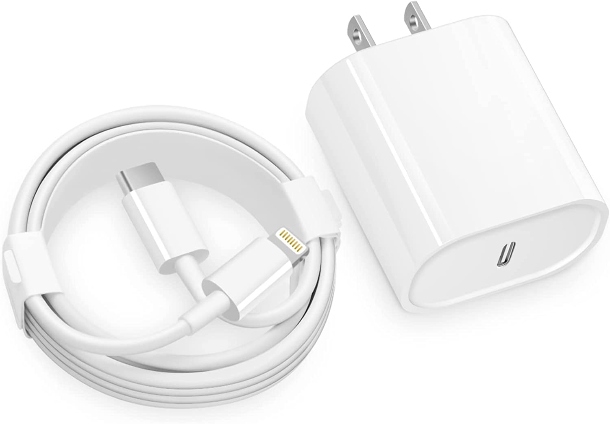

IPhone Chager
Lightning is a proprietary computer bus and power connector created and designed by Apple Inc. Introduced on September 12, 2012, to replace its predecessor, the 30-pin dock connector. The Lightning connector is used to connect Apple mobile devices like iPhones, iPads, and iPods to host computers, external monitors, cameras, USB battery chargers, and other peripherals. Using 8 pins instead of 30, Lightning is much smaller than its predecessor, which was integrated with devices like the iPhone 4 and the iPad 2. The male Lightning connector is symmetrical (same pins on either side), so it can be inserted into a female Lightning port in either orientation. The male plug is indented on each side to match up with corresponding points inside the female port to retain the connection.
R500
230 Available